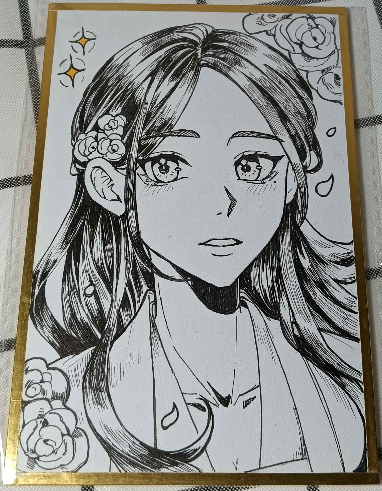

Vosto全域資料庫
Vosto全域資料庫
「真奇怪，到處都是既視感。」
從藥師的初次見面，一直到現在，生生世世都被愛著，或者是專為他打造的遊樂場？
| 薛關瓷 | |
|---|---|
 展出的是他與龍相識的最初那世 |
|
| 姓名 | 薛關瓷 |
| 生日 | ？月？日 |
| 年齡 | 32歲 |
| 性別 | 男 |
| 身體資訊 | 170公分 | 66公斤 |
| 愛好 |
藥房 溫室 藥材 |
該條目正在施工中。
烏黑的長髮及肩下與胸之間，柔如柳絲，平時是放下來披著的，為求方便時則會綁起來，看上去有點俏皮，瀏海全都向後梳，只留一小戳在前面，柔順不隨意打結頭髮最大的優點，打理起來省去非常多時間與金錢，純黑的曈膜彷彿能裝下一切的光線，若是靠近看的話能發現上面映著對方的模樣，鳳眼使他給人一種距離感，眼角帶著一點淚痣，加上那面無表情的樣子讓人對他的情緒摸不著頭緒，眼神與跟他相同地位的人不同，他的眼神裡沒有奴性，而多了一分逍遙且總是炯炯有神。
鵝蛋的臉型雙頰總是泛著紅暈，笑著時會出現酒窩，不過顯少見他笑著，身高不高加上鮮少鍛鍊使他看起來更為弱小，手指修長骨節分明，因長期的磨藥、燉藥、採集手上佈滿著粗糙的繭，指甲為了方便辦事而都是短的，太常他覺得礙手礙腳，左腿內側上有一道長長不規則的胎記，穿衣時會被蓋住因此沒有過多的在意。
服裝：
．內裡是深藍色的，穿著黑色大氅，上頭繡著歲寒三友也就是松、竹、梅，大氅邊邊還用有點寬度的白布縫製上去，與大氅的布料是相同的，只是顏色不同，上頭沒有繡東西，袖子內有著自己親手繡的名字，儘管現在繡功已經進步很多，他還是捨不得拆掉重繡，鞋子整雙純黑色，上頭沒有過多的裝飾。
火爆的性格近期而收斂許多，但若是做出過而越矩的行為而遭到怒火是理所當然的，閒來無事時會找人到涼亭喝茶看風景順便與人辯論道理，又或者待在充滿木質香的藥房繼續研讀草藥知識增進行醫的技術。
對於認可的人使命必達，偶爾還會逗弄一下找樂子，但不會太超過，相處的分寸還是知曉的，看見地方在舉辦活動之類的會非常有興趣的想要參加，挺喜歡人間氣息，會拉著其他人一起去，通常是他收養的孩童。
平時不苟言笑，熟了以後放的非常開，看到與自己相同的人會盡量與對方交好，畢竟在這個時代多一個朋友就是少一個敵人，在做事情時會習慣性的把一小搓的頭髮用手指捲著玩。
絕對保守病人的秘密，認為沒必要大肆宣傳他人的事情來提高自己的價位，不過聽八卦這項消遣，依然有興趣，看見他人難過的哭時通常是理性大於感性的，因此說出來的話語通常無法安慰道他人，這是他的痛處。
他人的胡鬧會讓自己感到非常煩躁，但由於是病患因此只能好聲好氣，若是病患家屬則會用諷刺的語氣回話。
雖然不怎麼長喝酒，但他有個酒豪的稱號，相當少見的日子，會在月黑風高的夜晚來暢飲。
他的背景故事似乎受到某種力量的保護，無法讀取。
精通醫術、弓箭、茶藝，馬術、肉搏普通，劍術略懂，體質很好不容易感冒。
對薛關瓷來說，僅楠是他的兄弟，是他撿來的小孩，但其實僅楠超級喜歡他，甚至到了固執的程度
參見：固執 ↗
🖼️遺失
